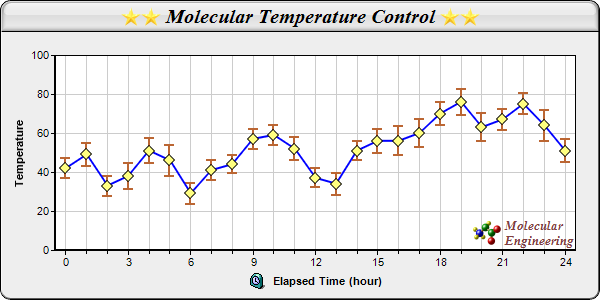

This example demonstrates combining a line layer with a box-whisker layer to draw a line with error symbols.
The blue line and the yellow diamond symbols are from the line layer, created using
XYChart.addLineLayer2,
Layer.addDataSet, and
DataSet.setDataSymbol.
The error symbols come from the box-whisker layer, created using
XYChart.addBoxWhiskerLayer. In this example, the "box" parts of the box- whisker symbols are disabled by setting the data for the box and median to empty arrays. As a result, only the "whisker" parts of the box-whisker symbols are visible and they become the error symbols.
The maximum and minimum marks in this example is computed by adding/subtracting the error value to/from the data value using a ChartDirector utility class
ArrayMath.
The following is the command line version of the code in "cppdemo/errline". The MFC version of the code is in "mfcdemo/mfcdemo". The Qt Widgets version of the code is in "qtdemo/qtdemo". The QML/Qt Quick version of the code is in "qmldemo/qmldemo".
#include "chartdir.h"
int main(int argc, char *argv[])
{
// The data with error information
double data[] = {42, 49, 33, 38, 51, 46, 29, 41, 44, 57, 59, 52, 37, 34, 51, 56, 56, 60, 70, 76,
63, 67, 75, 64, 51};
const int data_size = (int)(sizeof(data)/sizeof(*data));
double errData[] = {5, 6, 5.1, 6.5, 6.6, 8, 5.4, 5.1, 4.6, 5.0, 5.2, 6.0, 4.9, 5.6, 4.8, 6.2,
7.4, 7.1, 6.0, 6.6, 7.1, 5.3, 5.5, 7.9, 6.1};
const int errData_size = (int)(sizeof(errData)/sizeof(*errData));
// The labels for the chart
const char* labels[] = {"0", "1", "2", "3", "4", "5", "6", "7", "8", "9", "10", "11", "12",
"13", "14", "15", "16", "17", "18", "19", "20", "21", "22", "23", "24"};
const int labels_size = (int)(sizeof(labels)/sizeof(*labels));
// Create a XYChart object of size 600 x 300 pixels, with a light grey (eeeeee) background,
// black border, 1 pixel 3D border effect and rounded corners.
XYChart* c = new XYChart(600, 300, 0xeeeeee, 0x000000, 1);
c->setRoundedFrame();
// Set the plotarea at (55, 55) and of size 520 x 195 pixels, with white (ffffff) background.
// Set horizontal and vertical grid lines to grey (cccccc).
c->setPlotArea(55, 55, 520, 195, 0xffffff, -1, -1, 0xcccccc, 0xcccccc);
// Add a title box to the chart using 15pt Times Bold Italic font. The title is in CDML and
// includes embedded images for highlight. The text is on a light grey (dddddd) background, with
// glass lighting effect.
c->addTitle(
"<*block,valign=absmiddle*><*img=star.png*><*img=star.png*> Molecular Temperature Control "
"<*img=star.png*><*img=star.png*><*/*>", "Times New Roman Bold Italic", 15)->setBackground(
0xdddddd, 0, Chart::glassEffect());
// Add a title to the y axis
c->yAxis()->setTitle("Temperature");
// Add a title to the x axis using CMDL
c->xAxis()->setTitle("<*block,valign=absmiddle*><*img=clock.png*> Elapsed Time (hour)<*/*>");
// Set the labels on the x axis.
c->xAxis()->setLabels(StringArray(labels, labels_size));
// Display 1 out of 3 labels on the x-axis. Show minor ticks for remaining labels.
c->xAxis()->setLabelStep(3, 1);
// Set the axes width to 2 pixels
c->xAxis()->setWidth(2);
c->yAxis()->setWidth(2);
// Add a line layer to the chart
LineLayer* lineLayer = c->addLineLayer();
// Add a blue (0xff) data set to the line layer, with yellow (0xffff80) diamond symbols
lineLayer->addDataSet(DoubleArray(data, data_size), 0x0000ff)->setDataSymbol(
Chart::DiamondSymbol, 12, 0xffff80);
// Set the line width to 2 pixels
lineLayer->setLineWidth(2);
// Add a box whisker layer to the chart. Use the upper and lower mark of the box whisker layer
// to act as error zones. The upper and lower marks are computed using the ArrayMath object.
BoxWhiskerLayer* errLayer = c->addBoxWhiskerLayer(DoubleArray(), DoubleArray(), ArrayMath(
DoubleArray(data, data_size)).add(DoubleArray(errData, errData_size)), ArrayMath(
DoubleArray(data, data_size)).sub(DoubleArray(errData, errData_size)), DoubleArray(data,
data_size), Chart::Transparent, 0xbb6633);
// Set the line width to 2 pixels
errLayer->setLineWidth(2);
// Set the error zone to occupy half the space between the symbols
errLayer->setDataGap(0.5);
// Add a custom CDML text at the bottom right of the plot area as the logo
c->addText(575, 247,
"<*block,valign=absmiddle*><*img=small_molecule.png*> <*block*><*font=Times New Roman Bold "
"Italic,size=10,color=804040*>Molecular\nEngineering<*/*>")->setAlignment(Chart::BottomRight
);
// Output the chart
c->makeChart("errline.png");
//free up resources
delete c;
return 0;
}
© 2023 Advanced Software Engineering Limited. All rights reserved.